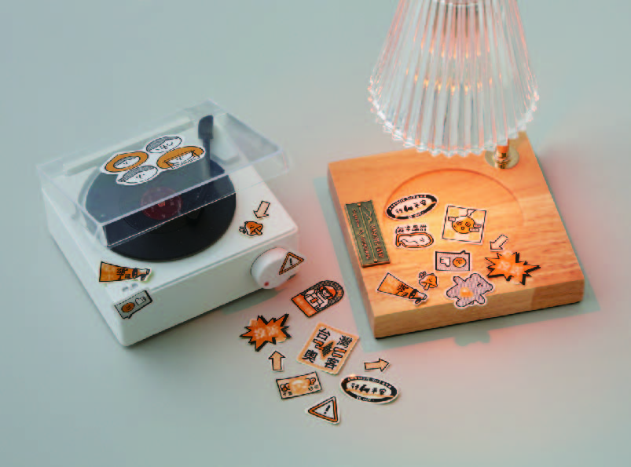
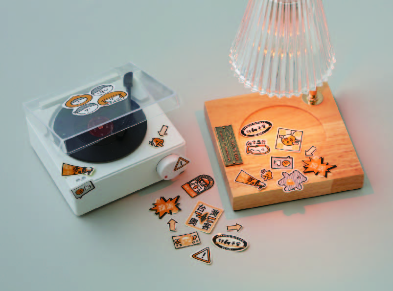

叮咚city
近幾年因疫情及消費型態的轉變，使得外送產業迅速的發展，但這個新興產業的背後卻有許多社會問題產生，造成外送爭議頻繁地出現在新聞上，但真的如我們所看到的那樣嗎?本專題以「停、看、聽」三種不同形式的設計產出，模擬外送城市的情境，也代表著外送產業與交通發展息息相關，設計產出分別是外送桌遊、叮咚日報以及訪談播放器。
Recent years have seen a rapid development in the food delivery industry, attributed to the pandemic and changes in consumer behavior. Many social issues have arisen behind this emerging industry, resulting in frequent delivery disputes in the news. However, is this really the complete narrative?
This subject is to simulate the delivery city situation using three design forms - Stop, Look, Listen. It also represents the close relationship between the delivery industry and transportation development. The three design outputs are a delivery board game, Ding Dong Daily, and an interview player.
 
